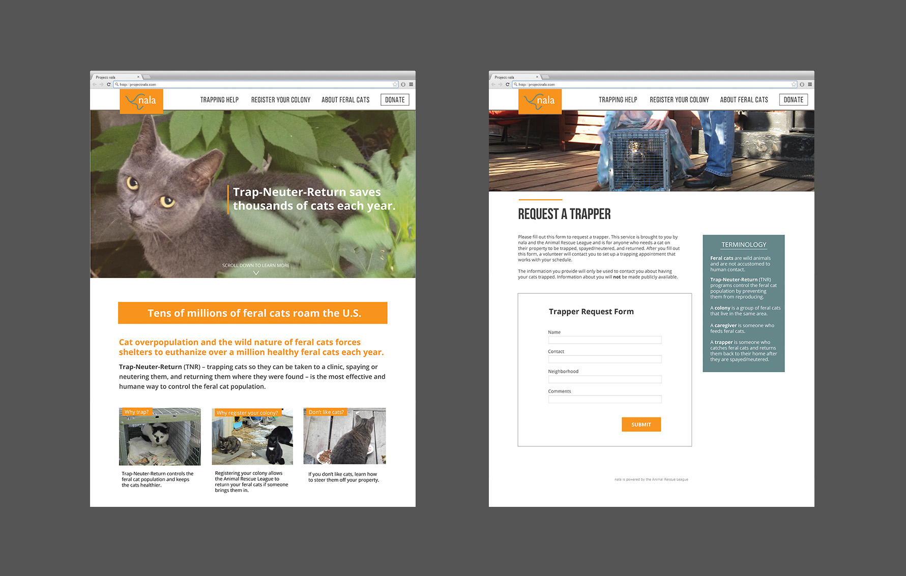
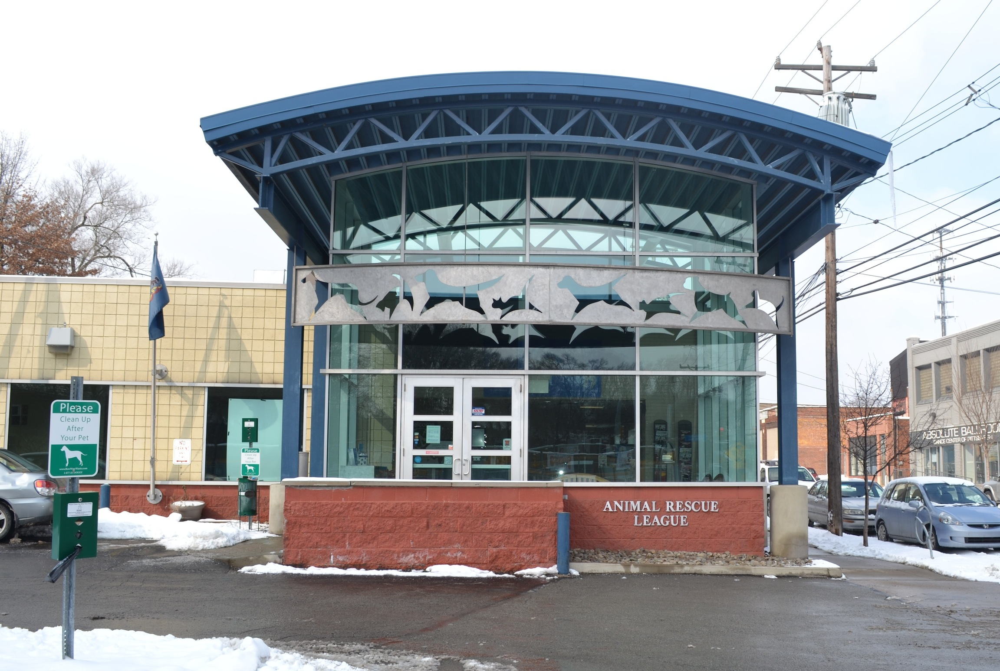
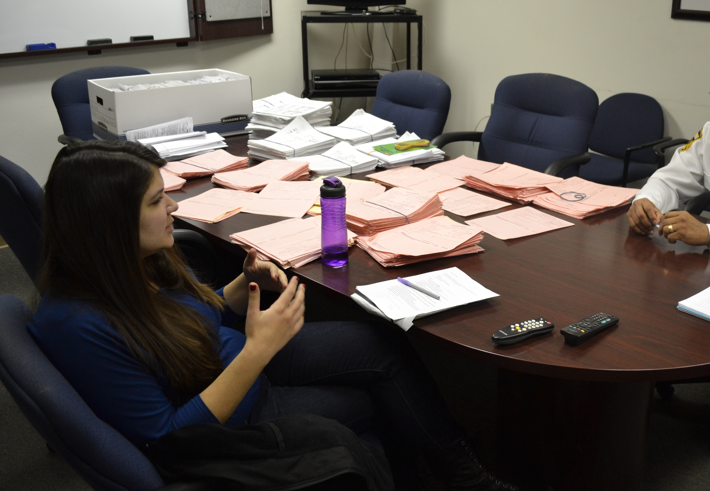
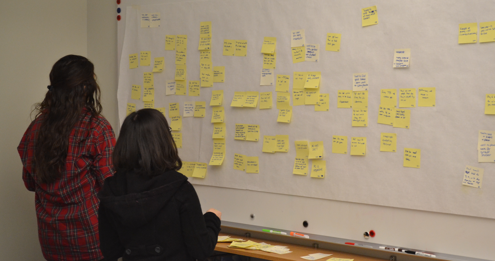
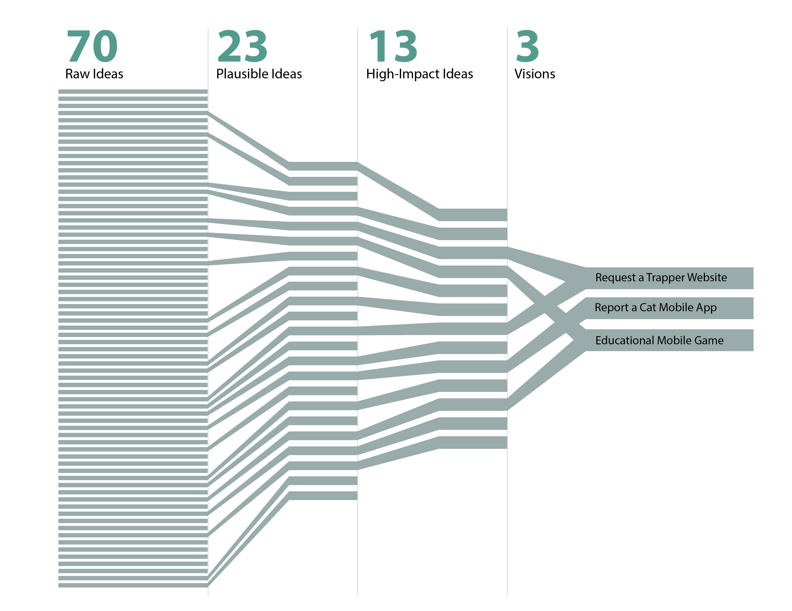
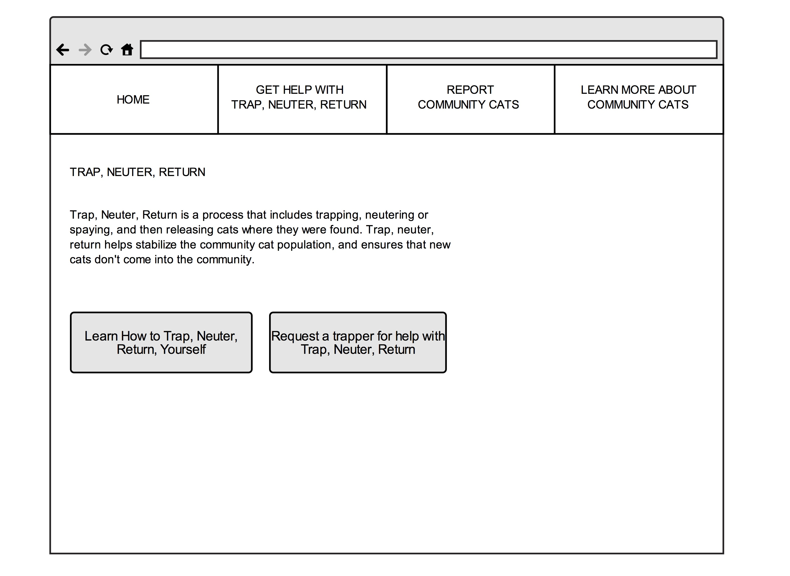
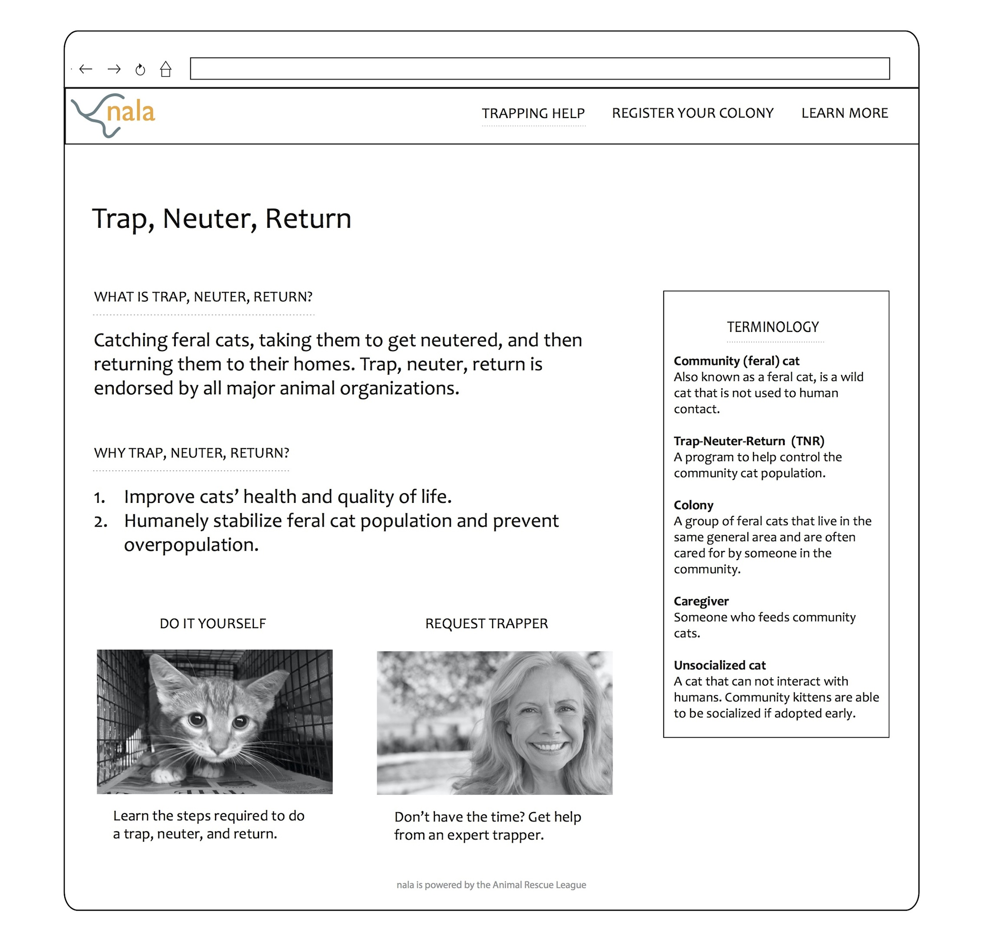

Animal Rescue League Project
My Role
- Interaction Design
- Service Design
- Book Design
- Research
- Prototyping
Process
- Contextual Inquiry
- Contextual Interviews
- Guided Storytelling
- Business Origami
- Affinity Diagramming
- Wireframing
- Iterative Prototyping
- Customer Journey Maps
- Service Blueprints
Teammates
- Nissa Nishiyama
- Lowell Reade
Timeline
- 4 months
- Jan - May 2014

Final Concept
Project nala is a website I designed and prototyped for the Animal Rescue League of Western Pennsylvania. It allows community members to request expert trappers in order to Trap-Neuter-Return feral cats in their neighborhoods. Trap-Neuter Return is a humane way of controlling the feral cat population.

Service Design
In addition to the website, we created a service blueprint to specify what steps should be taken in the front and back stages for the service to be successful.

Client
The Animal Rescue League wanted a tool to educate the community about feral cats and also control the feral cat population.






prev / next